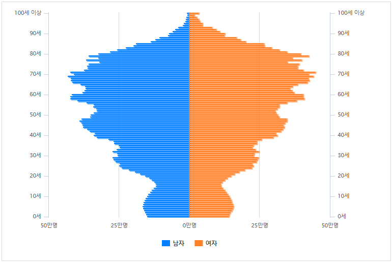
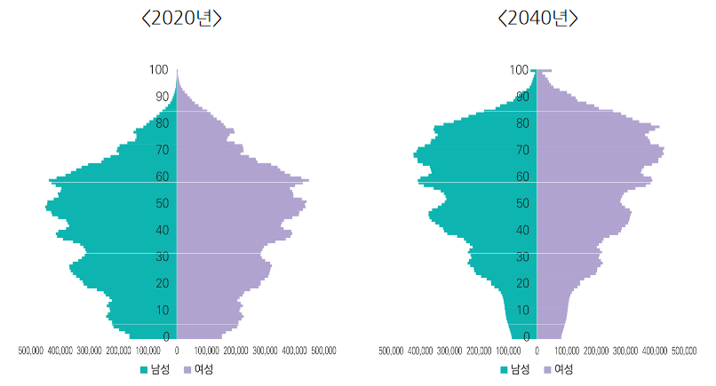

2040년 인구피라미드 예측치
기존 통계청에서 발표한 장래인구추계임
다만 해당그래프는 현행 0.8명~0.9명을 유지하는것이 아닌,
출산율이 1.2명까지 회복된다는 가정하 중위(보통)
추계를 바탕으로 만들어졌고
이전부터 출산율을 너무 낙관적으로 잡은거 아니냐 라는
비판이 꾸준히 제기되어왔었음
그리고 아래가 최근 국회 예산 정책처 전망에서
현실값을반영한 인구그래프임

아래쪽 약간 볼록하게 솟은부분이 뜯겨나가고
이젠 핵폭탄 맞은것 마냥 버섯구름처럼 변해버림
요약 : 진짜ㅈ됨
그래도 우리만 ㅈ된게 아니라서